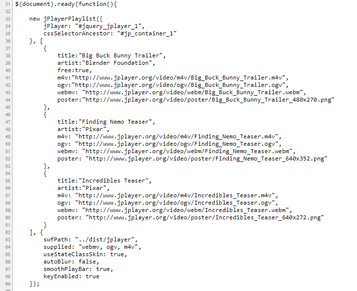

Playlist
Update Required
To play the media you will need to either update your browser to a recent version or update your Flash plugin.
Com ho hem fet?
- Seguir els passos 1 a 5 de https://jplayer.org/latest/quick-start-guide/ (incloure jQuery, jPlayer i un skin). Podem obtenir una CDN de jQuery i jPlayer, però ens haurem de descarregar jPlayer per poder pujar els fitxers de l'skin al nostre web.
- Copiem el codi font de la demo: https://jplayer.org/latest/demo-02-video/
- En concret, aquest script que afegirem al head:
- (Nota: hem d'adaptar la propietat swfPath, esborrar l'última línia i recordar-nos de tancar la funció amb “});”)
- Bàsicament, tenim el constructor de la playlist, que buscarà el reproductor a l'element amb id jquery_jplayer_1 i afegirà els tres vídeos que veiem.
- I aquest codi que afegirem al body:
- Aquí hi ha el cos del reproductor (veure id jquery:jplayer_1). El codi de la playlist (veure classe jp-playlist) queda com un esquelet nu i el generarà Javascript.
- Nota: l'skin no es visualitza bé en Chrome, però sí en Mozilla.